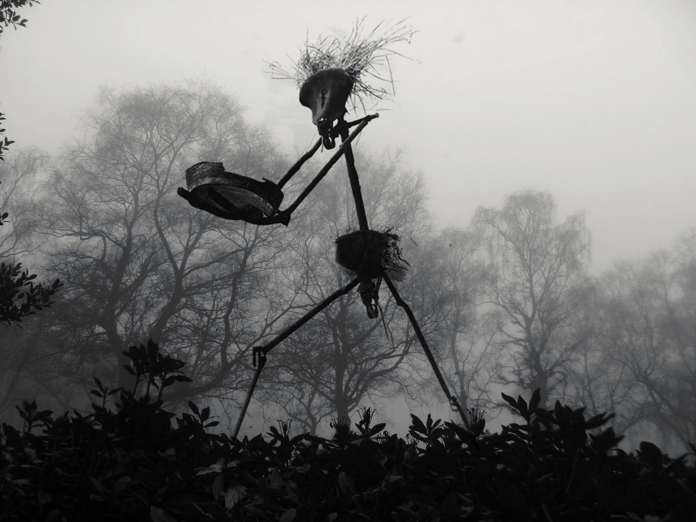

Kratt

-350.99 £
See Kratt on suurepärane valik igale innukale aednikule, kes otsib usaldusväärset olendit oma töökoormuse vähendamiseks. Sellel Kratil on võimsad tammepuidust jalad ja ta on ehitatud vastupidava terasraamiga. Sellel on kõrge tõstevõimega lõikesüsteem, mis tagab suurepärased tulemused ja suur lõikelaius kuni 28 tolli. See müstiline olend sobib suurepäraselt suuremate alade hõlpsaks puhastamiseks ning seda on lihtne manööverdada ja hooldada. Ergonoomilise disaini ja lihtsate käskudega saate mugavalt töötada igal maastikul. Hankige oma Kratt kohe ja hakake oma aeda hõlpsalt hooldama!
×